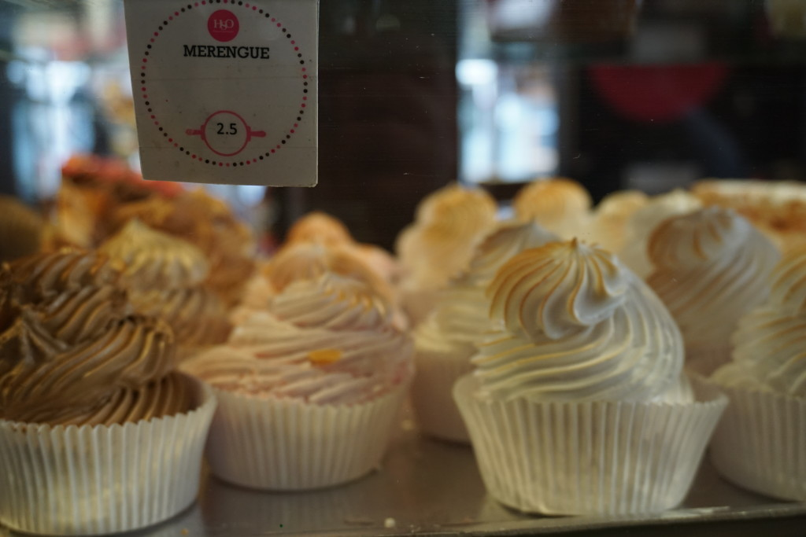

Prezentacje podróżnicze pojawiają się ostatnio jak grzyby po deszczu. Wydawałoby się, że wraz ze wzrostem oferty i konkurencji powinno być coraz więcej i więcej dobrych lub świetych prezentacji. I tak jest. Niestety często giną one wśród tych kiepskich i nudnych.
Dlaczego ludzie chodzą na prelekcje podróżnicze? Czasam z nudów, czasami dla inspiracji, w pogoni za marzeniami o miejscach, w które na razie nie mogą sami pojechać, w poszukiwaniu praktycznych porad i dla rozrywki. Możemy też powiedzieć, że chodzi się ‘na kogoś’ – tutaj wygrywają travelbryci i znane nazwiska, ale przez to ryzyko rozczarowania jest mniejsze. Nawet jeśli sama prezentacja mniej się nam spodoba to przynajmniej zostaje radość ze spotkania ze znaną osobą. (Chociaż… po krótkim zastanowieniu muszę przyznać, że nigdy nie wyszłam z takiego spotkania rozczarowana.)
Chodzi się też ‘na coś’ – temat nas interesuje, bo chcemy porównać nasze wrażenia, dowiedzieć czegoś o naszej następnej destynacji lub jest to miejsce z naszych marzeń i chcemy posłuchać kolejnej opowieści. I to są dla mnie najbardziej ryzykowne prezentacje – wszystko może się wydarzyć, bo:
- Prelegentowi wydaje się, że egzotyka wystarczy.
No nie wystarczy. To znaczy może wystarczy tym, którzy nigdzie nie byli i każdy ‘inny’ i bardzo kolorowy obrazek ich ucieszy, ale na sali są nie tylko tacy – ci którzy cokolwiek widzieli (nawet jeśli jest to świat bliższy niż dalszy) bywają już bardziej wymagający i chaotyczna opowieść o tym jak było fajnie, jak fajnie ktoś spedził czas, jaka fajna była pogoda, jakie fajne przygody mieliśmy i jakich fajnych ludzi spotkaliśmy po drodze jest niewystarczająca.
- Prelegentowi wydaje się, że ludzie są najważniejsi.
I nie ma nic złego, że ma takie zdanie! Niech ma – każdy musi mieć swój sposób na podróżowanie. Niestety, na palcach jednej ręki mogę policzyć tych którzy tak twierdzą i jednoczesnie umieją o tym opowiadać. Opowiadanie o ludziach jest o wiele trudniejsze niż opowiadanie przygód czy relacjonowanie trasy. Nie wystarczy powiedzieć, że byli fajni czy że mieli trudne życie (swoją drogą to niesamowite, że najważniejsi ludzie dla podróżnika to ci, którzy mają problemy i ciężkie życie. Życie ci się udało? Od razu jesteś mniej ciekawym człowiekem).
- Prelegentowi wydaje się, że wystarczy opisać zdjęcia.
Drogi prelegencie – nie wystarczy! Większość ludzi, która przyszła na twoją prezentację z pewnością widzi te zdjęcia. Jeśli ktoś zapomniał okularów i obraz mu się lekko zamazuje to poszuka sobie miejsca bliżej. Ja naprawdę widzę, że na zdjęciu jest jakaś kobieta, która przygotowuje jakiś posiłek w jakiejś chacie w jakiejś afrykańskiej wiosce i jeśli nie potrafisz zastąpić słów ‘jakiś/jakaś/jakieś’ innymi to naprawdę twój komentarz niewiele wnosi.
- Prelegentowi wydaje się, że umie mówić.
Komunikuje się i dogaduje, to prawda, ale to często okazuje się za mało, żeby stanąć przed publicznością. Monotonny ton lub cichy głos usypiają widownię, a ci którzy nie śpią zastanawiają się czy prelegent jest tam za karę i czy sam się nudzi tym co mówi (Niedawno na prezentacji siedzący koło mnie pan usnął – zastanawiałam się czy zacznie chrapać, ale prezentacja się skończyła, on gwałtownie się obudził i razem z innymi zaczął bić brawo).
- Prelegentowi wydaje się, że najlepsze zdjęcia to te bez obróbki.
Taki prelegent zazwyczaj głośno też protestuje przeciwko oszukiwaniu rzeczywistości poprzez obróbkę fotograficzną i jest zwolennikiem ‘naturalności’ a ja patrząc się na ekran zastanawiam się ile musiałabym wypić (i czego), żeby widzieć tak krzywe horyzonty. (Przeciwieństwem tego typu prelegenta jest taki, który uwielbia funkcje ‘nasycenie’ i ‘kontrast’ i oglądamy tak zieloną trawę, że choćby nie wiem ile lat ją strzyc i nawozić to nigdy taka nie będzie). 
I jeszcze o zdjęciach: drogi prelegencie, zastanów się czy to co pokazujesz na zdjęciach ma związek z tym o czym mówisz. Nie pokazuj więc bez, jeśli opowiadasz o argentyńskich stekach. A takiego nieostrego zdjęcia bez to najlepiej w ogóle nie pokazuj, nawet jeśli opowiadasz o bezach!
- Prelegent nie umie dokonywać wyboru.
Dotyczy to zarówno zdjęć jak i opowieści. W pierwszym przypadku opowiadającemu wydaje się, że przez godzinę da się pokazać 500+ zdjęć i przed końcem nerwowo zaczyna przyciskać przycisk na pilocie, żebyśmy my, widownia, zobaczyli te które jeszcze zostały, a zdjęcia migają w takim tempie, że widz ledwo zauważa, czy na zdjęciu małpa czy podróżnik. W przypadku opowieści początek upływa na powolnym opisywaniu śniadania, obiadu, kolacji; na zachwycaniu się pierwszym autobusem, którym ktoś jechał, drugim, trzeciem… A potem? Potem mamy: tojajużmuszękończyć?aprzecieżdopieroodwóchtygodniachopowiedziałemtojawamszybkoopowiemotychostatnichtrzech.
- Prelegent nic nie wie.
Spędził co prawda wakacje w Malezji, Meksyku czy Maroku, ale na muzea go nie było stać to nie wchodził, przewodników czytać nie lubi więc wie tylko, że na zdjęciu to „jakaś” budowla (patrz pkt 3), języka nie zna więc nawet nie pogadał z ludźmi (no angielski, trochę, tyle żeby przeżyć). Ja też co prawda bywam w krajach gdzie nie rozmawiam tylko się dogaduję, na czytanie nie zawsze mam czas, a do muzeów nie chce mi się wchodzić, ale ja się nie pcham na scenę i nie robię z siebie eksperta. I jeszcze, żeby ten prelegent coś opowiedział o swoich odczuciach (ale tego nie robi), albo o ludziach (ale patrz pkt 2), ale nie… taka prezentacja o niczym, ale pochwalę się, że byłem.
- Prelegent nie bierze pod uwagę kim jest jego widownia.
Inaczej się opowiada dzieciom, inaczej studentom, a inaczej widowni mieszanej gdzie przekrój wiekowy jest duży. Tymczasem biorąc pod uwagę chaos i język prezentacji czasami mam wrażenie, żę prelegent przygotował się do opowieści w knajpie przy piwie (a najlepiej już po piwach). Nie zrozumcie mnie źle, w knajpie przy piwe bardzo chętnie pogadam o podróżach, nawet kilka godzin, ale jak idę gdzieś gdzie mam tylko posłuchać to wolałabym, żeby prelegent wiedział co i jak powiedzieć.
- Prelegent czuje pogardę dla miejsca w którym był.
Być może ujmuję to zbyt ostro i nie jest to coś co każdemu łatwo zauważyć, ale mnie to wkurza. Bardzo mnie wkurza. Bo język jakiego używamy wpływa na postrzeganie świata przez nas, a także kreuje ten świat innym. Widać to często wśród ludzi, którzy właśnie byli w jednym z krajów tzw. Trzeciego Świata i skupiają się wyłącznie na negatywnych aspektach miejsc, koncentrując się na biedzie i problemach. Zresztą już samo wciąż popularne określenie „Trzeci Świat” jest nacechowane negatywnie sugerując, że nie są to kraje zamieszkiwane przez obywateli pierwszej kategorii. Ale… kto jest bez winy niech pierwszy rzuci kamień – sama zauważyłam pewne rzeczy dopiero po kilku podróżach.


Ta sama miejscowość, jakieś 500 metrów różnicy. Jaki naprawdę jest kraj, w którym byłam?
- Prelegent myśli, że jest tak zajebisty, że nie musi się starać.
Wiele zachowań wpada w tę kategorię: a) brak przygotowania, bo co to za problem opowiedzieć o swoje podróży, skoro było tyle ciekawych przygód (ciekawych dla ciebie, prelegencie), bo miejsce tak egzotyczne, że już słysząc nazwę wszyscy powinni się zachwycać; b) brak samokrytyki w stosunku do siebie i swojej prezentacji – kiedyś przypadkiem podsłuchałam jak autor dosyć kiepskiej prezentacji zjechał swojego festiwalowego kolegę, autora innej prezentacji, zarzucając mu wszystkie błędy, które sam popełnił – przykro tego było słuchać (korekta: przykro było podsłuchiwać, i wiem, że nie powinnam, ale… drodzy autorzy: nie obgadujcie innych w przestrzeni publicznej).
- Prelegent jest nieprzygotowany.
Nikt nie przebiegnie maratonu jeśli wcześniej tylko lajkował posty o bieganiu na facebooku, nikt nie nauczy się mówić w obcym języku jeśli robi tylko gramatyczne ćwiczenia i wstydzi się odezwać. Ale nawet jeśli ktoś ćwiczy to do maratonu trzeba zacząć przygotowywać się wcześniej niż tydzień przed, a trzy dni przed podróżą to może nauczymy się podstawowych słówek, ale na pewno nie nauczymy się mówić.
Z jakiegoś dziwnego powodu wielu prelegentom wydaje się, że wystarczy wrzucić zdjęcia do folderu, ponumerować je, pomyśleć o czym będziemy mówić – to wszystko oczywiście kilka godzin przed prezentacją – i voila! – jesteśmy gotowi! Przećwiczyć wszystko wygłaszając kilkakrotnie to co mamy powiedzieć przed publicznością? Co za dziwny pomysł.
Przesadzam? Skąd! Nie tak dawno natknęłam się pewnym profilu fb na opis: „Już tak późno, a ja zabieram się za przygotowywanie prezentacji na jutrzejszy występ. Czy wy też robicie wszystko w ostatniej chwili?” Nawet nie pamiętam kto to napisał i czy dokładnie tak brzmiały te słowa (co akurat nie jest istotne, bo takie stwierdzenia widziałam kilkakrotnie). Pamiętam za to jedną z odpowiedzi: „Nie, my tak nigdy nie robimy.” I pamiętam kto to odpowiedział, bo na jego prezentacji byłam i było widać, że to świetnie przygotowana i przemyślana prelekcja podróżnicza.
Przygotowanie lub kompletny brak przygotowania naprawdę widać (i nie jest to to samo co pomyłki związane ze stresem w związku z występem). Jako nauczyciel angielskiego słucham wielu prezentacji i mimo, że język inny to zawsze mam wrażenie, że podobieństw jest mnóstwo – a przede wszystkim, im gorsza i gorzej przygotowana prezentacja tym mniej odporny jest prelegent na krytykę i tym więcej ma pretensji do oceny – nie ma znaczenia czy to student na lekcji czy podróżnik na festiwalu.
Wciąż chodzę na festiwale i prelekcje podróżnicze – najchętniej z przyjaciółmi, bo wtedy zawsze można wyjść i pogadać. Chodzę raczej ‘na kogoś’ – chodzę posłuchać ludzi, o których słyszałam dobre opinie i świetnie się wtedy bawię. Prezentacje na które idę, bo temat mnie interesuje często mnie rozczarowują, bo prelegenci popełniają jeden (a często wiele) z powyżej opisanych błędów.
Ostatnio takie rozczarowanie mnie ominęło: z powodu wyjazdu do Iranu nie udało mi się pójść na poznański festiwal podróżniczy „Na szagę” – bardzo żałowałam, bo go lubię, a poza tym jest blisko domu… Była tam prezentacja, która na pewno by mnie zainteresowała (tak myślałam) – kraj, który od lat mnie fascynuje, autor prezentacji miał doświadczenie w podróżowaniu – no szkoda, że nie byłam.
– Dobrze, że cię nie było. Nuda straszna – powiedziało kilku znajomych – za to ta prezentacja o Omanie na którą wcale nie planowaliśmy iść była świetna!
Na Oman iść nie planowałam, ale już sobie sprawdziłam kto to i jak i dopisuję kolejną osobę do listy ludzi, których chętnie posłucham.
Złe prezentacje wkurzają i pozostawiają poczucie straconego czasu (można było obejrzeć kolejny odcinek serialu…), świetne prezentacje inspirują do podróży (jeśli kiedyś kupię bilet do Australii, o której nigdy wcześniej nie myślałam, to na pewno będzie to wina LosWiaheros) i bawią nawet jeśli ktoś opowiada o miejscu, w którym nic nie ma (tylko np. śnieg i pingwiny – czyli opowieści Piotra Horzeli o Antarktydzie).
O kilku innych prelegentach, którzy mi się podobali wspominałam też w relacjach z Trampek i Wachlarza.
Pomiędzy złymi i fantastycznymi prezentacjami jest całkiem sporo dobrych i wartościowych. Bo na dobre prezentacje warto chodzić!
Co mówicie? Że miało być 101 powodów, a jest tylko 11? Zera tylko nie ma, zero to tyle co nic.
Gdyby ktoś chciał mi zasugerować, że powinnam sama spróbować, żeby zobaczyć, że przygotowanie prezentacji nie jest łatwe to powiem: nie ma mowy! Przygotowanie dobrej prezentacji wymaga czasu, ja czasu nie mam więc nie chcę.
Wszystkie komentarze na temat dobrych prelegentów, których mieliście okazję wysłuchać mile widziane!


{kind=link}
{kind=link}